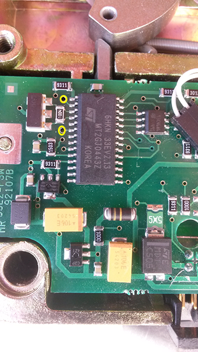

Hold "0" till it beepsPress 000000Then press 555555Then enter 123456 twice.
To enter time delay.
Enter opening code but hold down last number till it beeps.Press 9Enter time delay and open window twice (i.e. if 15min delay and 5min window was required you would enter 1505 twice).
To clear an unknown safe door combination.
The safe door needs to be already open or the entire mechanism on the bench for this.Remove the cover from the rectangular housing(solenoid unit)Note circuit board inside.

On circuit board find chip and find small test point holes next to pins 1 and 6 on the chip. They actually go to the second leg and the sixth leg on the right hand side of the chip. Circled in yellow in the above picture.With everything connected so keypad is functional jumper holes 2 and 6 together.On keypad press 555555The unit will beep 16 times.Then press 000000 and 555555.Then press 123456 twice, remove jumper from holes 2 and 6.The combination is now 123456
To change to customers desired combination.
Open safe door first.Press 000000Enter their old code once(two beeps will sound)Enter the new code twice(two beeps each time)Test new code (with safe door still open)Lock the safe.
Possible Combo Lock Problems and Remedies.
Opening the lock.
Enter the code and turn the handle CLOCKWISE within 4 seconds into the OPEN position (2 beeps)
Locking the safe.
Turn the handle ANTI-CLOCKWISE into the CLOSED position (no beeps)
Incorrect Code Penalty.
Three consecutive invalid codes will render the lock inactive for a period of 15 mins. Key pressing is refused in this period.
Valid Code.
A valid code is followed by a double beep. (2 beeps)
Invalid Code.
An invalid code is followed by a three beeps. (3 beeps)
Partly Entered Code.
After an interval of more than 10secs, the already entered part of the code is deleted and the entire sequence has to be re-entered.
Change of Code.
1.Press "0" six times. (2 beeps) 2.Enter your existing 6 digit code. (2 beeps) 3.Enter your NEW 6 digit code.4.Enter your NEW 6 digit code again. (2 beeps) If mistakes are made while changing the code or if an interval occurs of more than 10 secs, the old code remains valid and the entire sequence has to be re-entered.
Time Delay.
1.Enter valid code. (Delay period starts, LED flashes RED at 1 sec intervals) * If valid code entered during delay: Delay period restarts. ** If invalid codes are entered during delay: Delay period aborts.2.At the end of delay period, open period starts. (LED flashes RED at 1/2 sec intervals, lock beeps at 10 sec intervals) 3. During open period , enter valid code.
Low Battery.
1.Refused access to safe due to repeated beeping (6 beeps) 2. Allowed acess to safe but repeated beeping (6 beeps)3. A double beep or no keypad activity.All could indicate that the battery needs replacement.* Use only 9V Duracell battery.
 Menu
Menu